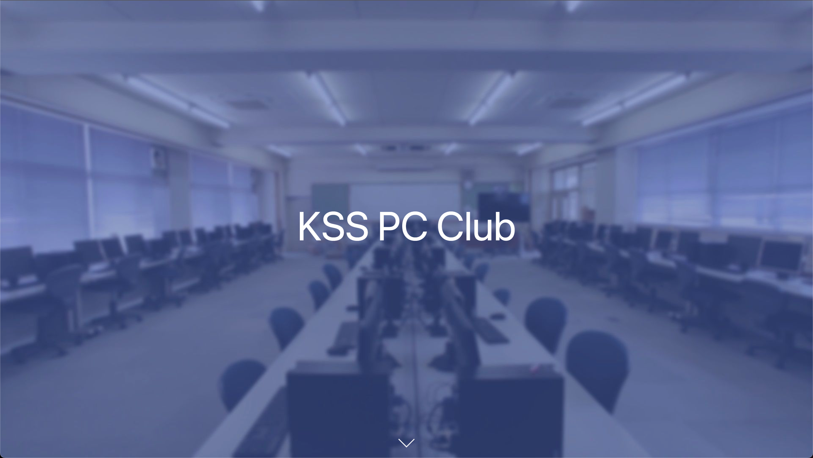

はじめに
このドキュメントは、KSS PC Club の部内において情報を共有することを目的としたものです。 誰でも自由に編集でき、必要なのは Git と Markdown 記法の知識だけですので、ぜひ、あなたもドキュメントを書いてみましょう!
（追記予定）
リンク
KSS PC Club の運営するアカウントやサイトへのリンク一覧です。
公式 web サイト

受賞歴や各種記事の公開をおこなっています。
TypeScript と React で構成されていて、ここのページでコードを公開しています。
SNS アカウント
リンクが貼られていないものに関しては部内で直接尋ねるなどして入ってください。なお、2022 年度より Slack の利用は停止しています。 KSS PC Club では主に Github を使用して作業を行なっています。Github はソースコードを共有し、問題点を伝えたり、コードの修正を送ったりする場です。Github Organization のメンバーになりたい場合は、admin まで自分のアカウント名と共に連絡してください。
（制作物等追加予定）
自己紹介
メンバーの自己紹介を記述しています。
eno1220
はじめに
2022/3 年度副部長の eno1220 です。自作 OS や競プロをやっています。web も少しできます。よろしくお願いします。
スキル
- HTML
- CSS
- JavaScript
- Node.js
- React
- C
- C++
- Zig
いずれも初心者~中級者くらいです。 また、(neo)vim や Linux をほんの少しだけ触ることができます。
リンク
やりたいこと!
今年度は文化祭などのデジタル化を担当している（させられている?）ので、さまざまなところで持続可能なデジタル化を推進していきたいと思っています。 また、好きなことを全力で極めたいと考えています。